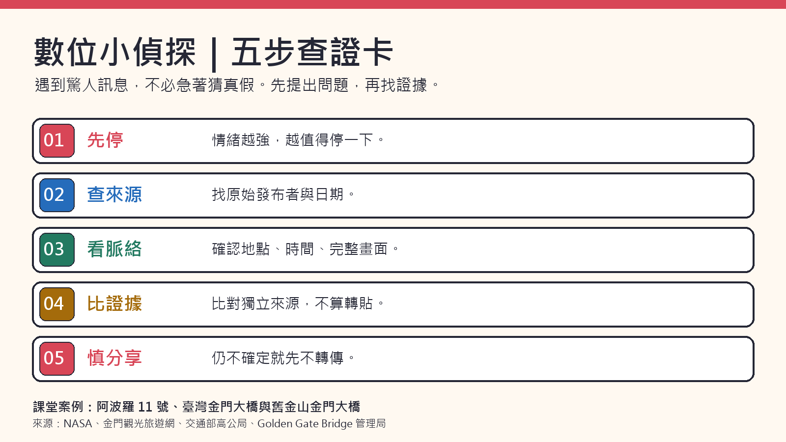

01
AI 可能一本正經地說錯
辨認幻覺、深偽、偏見；練習把「看起來怪怪的」轉成具體查核問題。
進入第一節 →學習目標：說出 AI 回答至少兩種可能錯誤，並提出一個可以查證的問題。
AI 把沒有根據的事實、來源或連結寫得很像真的。部分資訊正確，也不能保證整段都正確。
聲音、照片或影片可以被合成或修改。手指、文字和光影的異常只是線索；最重要的是追查原始來源。
AI 可能重複資料裡的刻板印象，例如把職業和性別綁在一起。要問：誰被省略？
社群流傳一張「太空人在月球戶外用吸管喝珍珠奶茶」的圖。你想先檢查哪個問題？
學習目標：辨認常見手法，說明一則訊息想讓人做什麼，以及轉傳可能傷害誰。
陌生帳號貼出「限時抽獎」訊息，要求同學先轉給十個人，再填個人資料。這是一個教學模擬訊息。
它想觸發什麼感覺？又想取得什麼？
同一張運動員皺眉的照片，標成「他討厭隊友」或「他忍著腳傷」。這是教學模擬情境；照片本身沒有回答原因。
要去哪裡找到完整影片與原始說明？
學習目標：分清「來源」與「轉貼」，至少比較三個互相獨立的可靠來源，並對查核結論說明理由。
連接大、小金門。2022 年 10 月通車，路線全長約 5.41 公里。
金門觀光旅遊網原始資料 ↗英文 Golden Gate Bridge。1933 年開工，1937 年開放通行；Joseph Strauss 任首席工程師。
大橋管理局歷史資料 ↗教材提供一段 AI 文：1968 年登月、NASA 專為任務發明魔鬼氈與 Tang。請找出它混入了哪些錯誤。
NASA 記載阿波羅 11 號在 1969 年 7 月 20 日登月；Tang 由 General Foods 於 1957 年開發。
NASA 任務總覽 ↗教材學習單用「治療三高、痛風、癌症」當作待查的健康宣稱。請區分「有營養」與「能治療」。
健康議題先找醫療與衛生機關資訊。學生不嘗試自行治療，也不轉傳尚未查證的偏方。
衛福部食品藥物消費者專區 ↗請選一個主張；每格記下來源名稱、網址，以及它提供的證據。資料只存在目前瀏覽器，按「複製報告」可交給老師。
請避免在欄位輸入姓名、電話或帳號密碼。
每題選一個答案。最後看分數和理由；答案不會傳送到網路。

先停、再查、看脈絡、比來源、慎分享。
原教材來源：Day of AI 中文教材與使用者整理的教學投影片、學習單。本頁為六年級彈性資訊課改寫。相關教材標示 CC BY-NC-SA 4.0；本頁改作同樣採非商業、相同方式分享。
外部連結可能有使用條件；課堂可改用教師投影示範。